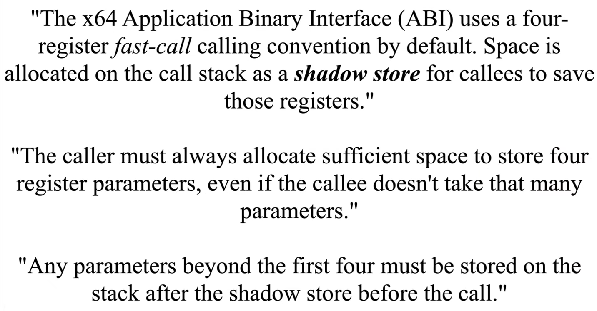

the shadow store is the reason for the minimum stack space allocation
as in a case where a function with 0 parameters is calling another function, 0x28 will still be allocated
0x8 for the aligment and 0x20 for the first 4 parameters (in ms calling conventions - rcx, rdx, r8, r9)
video link
